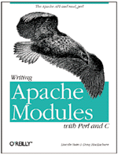

| Lincoln Stein
and Doug MacEachern O'Reilly & Associates, Inc. ISBN: 1-56592-567-X 724 pages $34.95 |
 |
Consider a restaurant with no wait at the host station, but table service from the Registry of Motor Vehicles. Although there is pandemonium as servers rush all over, only a few bits of food make it onto the tables. A bevy of worried managers huddles just inside the kitchen. "We need more waiters, more cooks, and a bigger kitchen!" says one. "Too expensive! Same kitchen, more arms per cook and waiter," says another. "Better yet: no cooks. We'll serve the fixings; the clients will make sandwiches!" says a third.
It is a rare scenario for Joe's Eats on the corner, but in Restaurant WWW, the appetites are voracious, patience is scarce, and quiet desperation rules in the image of an hour-glass. Faint indications of the underlying chaos may be heard as a server's hard disks thrash about retrieving data anonymous clients, but the loudest shouting is occurring in the kitchen where managers and developers hash through the various solutions - some portable, others powerful - to the web bottleneck problem.
What'll it be? Server-side includes, or client-side applets? FastCGI, or faster CPU's? Embedded interpreters, or script co-processing? Not only are the choices daunting, but the implication for future expandability, portability, and even API accessibility is up in the air. And if you don't understand what these words mean, then heaven help you. Or better yet, let Lincoln Stein and Doug MacEachern help you.
Stein and MacEachern, seasoned contributors to both CPAN's code content and its explanatory literature, have wandered away from the server scrum that has pitted the commercially-compromised and technically-challenged players like Sun/Netscape and Microsoft against each other and the freely-redistributable software community. In Writing Apache Modules with Perl and C, Stein and MacEachern alert us to the virtues of embedded interpreters, especially the Apache module "mod_perl," which itself executes Perl modules written either in plain Perl, or in C compiled into a Perl module.
Apache Modules is an absolutely superb introduction to an advanced application of Perl. The authors warn the reader early on: know Perl and its modular structure, appreciate client-server architectures, don't balk at httpd or CGI binaries, and be proficient in HTML. That's a lot to ask of a Perl generalist, but the authors' prose is clear and moves with the didactic rigor and stylistic lightness that is the particular provenance of any discipline's principal innovators. In bold, secure language, Stein and MacEachern recount the historical issues surrounding the web's clogged servers and the myriad of limited solutions to the problem. They even pause to clear up the potential confusion regarding the double-denotive term "module" which can mean both Apache modules and Perl modules, two entirely different things.
The last two hundred pages are an exhaustive API reference guide to Perl and C-compiled modules for mod_perl. The first four hundred pages address practical questions like content handling, maintaining server state between sessions, and customization. The ever-present issues of security, encryption, and authentication receive a chapter's attention. But Stein and MacEachern's most valuable contribution is in flattening an otherwise daunting learning curve to Perl serverdom. The opening chapters are an expert introduction to the history of web service, the advent of Apache, and the philosophy of mod_perl. The story traces a full circle, beginning with the obligatory "Hello, world" how-to and closing with an ironic "Goodbye World" example to illustrate the launching of subprocesses, that naive GOTO-like tactic that is largely responsible for the web bottleneck in the first place. But even the backwards-compatible "bad" solutions are among the options available to Apache Perl module developers.
Together with Clinton Wong's Web Client Programming with Perl, Apache Modules gives the Perl-literate web enthusiast experience with both sides of the WWW interface without ever leaving a Perlesque setting, or even the O'Reilly shelf in the bookstore.
When you are done reading the book, take a self-test by trying to read the fold-out quick reference card wedged inside the back cover. If you can understand the technical outline while imagining a six-armed waiter and millions of hungry patrons, then come on into the kitchen and join the debate.
__END__